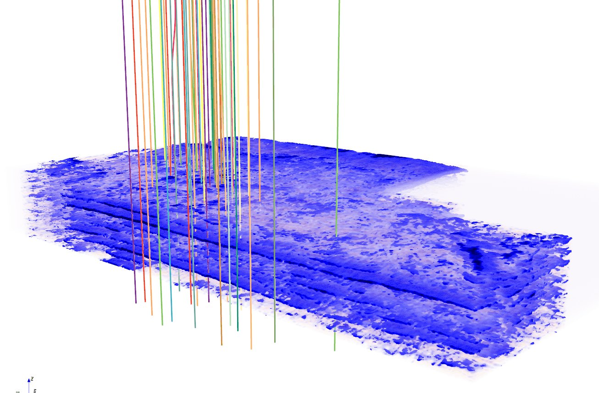

ESCA Geoscience delivers geology, geophysics and reservoir studies, collects field analogue data, and builds the software those studies run on.
How well seismic energy reaches and images a target below the surface. Poor illumination leaves shadows; good illumination gives a clear picture.
The rock, fluids and pressures below the surface that decide where to drill and how to develop a field.
We bring a clear picture of the subsurface to the people who have to make decisions about it.
We run subsurface studies for our clients, and we provide the technology to do that work: our own software, installed on premise, and software built to order.
Geology, geophysics and reservoir projects focused on prospectivity analysis and reservoir development, from seismic processing to reservoir simulation, plus field work to collect analogue data.
Our studies →ESCA Subsurface and ESCA Imaging, installed on your own infrastructure, and custom software development for web or on-premise use.
Our software →Studies that take a dataset from raw seismic and wells to a decision about where the hydrocarbons are and how to produce them.
Every study is carried out with our in-house software, so the methods and the tools are developed by the same team.

Rock you can walk on helps explain rock you can only image. We collect field analogue data that can be compared directly with the subsurface.
One application for subsurface interpretation and modelling: wells, logs, seismic and 3-D geological models share one project and one data tree.




From field data to interpretation-ready seismic. Built for multi-node computing clusters on Linux, highly efficient, and fully compatible with ESCA Subsurface.
Software built for your workflow: web-based or installed on premise, standalone or built on top of ESCA software.
A study, a software licence, or a tool built for your team: write to us and we will arrange a conversation.